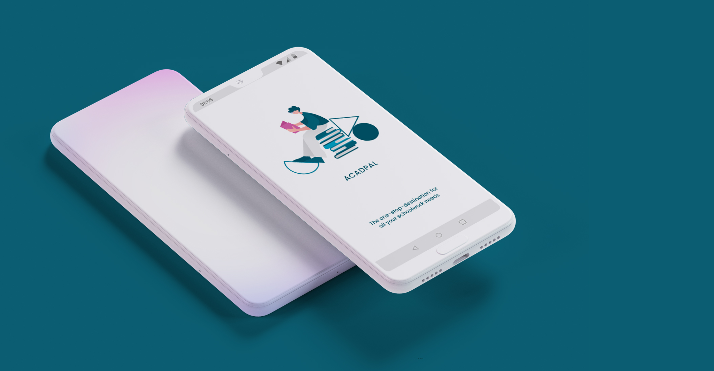
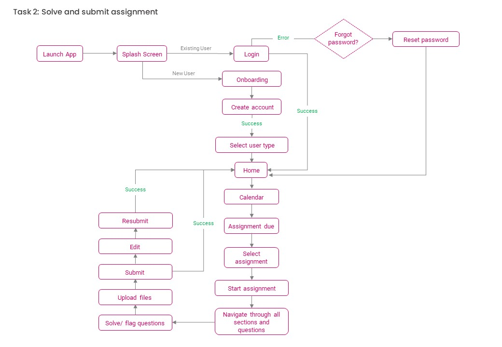
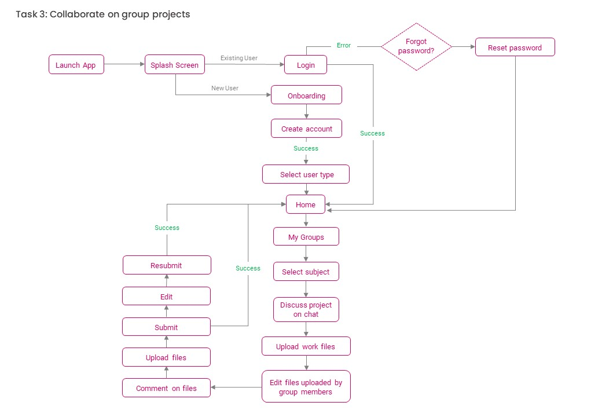

ACADPAL: LEARNING MANAGEMENT SYSTEM
48hr Challenge- Research & Design (2021)

DESIGN BRIEF
- Design a high fidelity wireframe for an app based homework platform for high school students, allowing interactions between students and assignments.
- Design the UX from a student’s perspective who is going to submit homework.
- Students will be able attempt questions as well as navigate to other questions in an assignment.
- Design should be such that it allows students to use basic functionalities that are required to complete and submit a homework/assignment.
TOOLS USED
Paper & pen, Adobe Photoshop, Adobe XD
METHODS USED
Research, Competitor Analysis, User Interviews, User Personas, User Journey Map, User Flow, Wireframing, Prototyping, High Fidelity Design.
PROBLEM STATEMENT
Learning Management System platforms have been in use since quite some time now, but due to recent conditions and increase in the use and feasibility of technology, the use of such platforms has rapidly increased. Since the COVID 19 pandemic hit the world, and everyone moved to the WFH culture, students and teachers of Universities and schools have also been affected a lot. Online schooling has become the new norm, and there are not many services catering to these users to make the online learning experience easier. Over 90% of the teachers adopted WhatsApp as the primary mode of conducting assignments/homework. Problem with the existing products:
- Overall shoddy experience
- Creating assignments is extremely difficult
- Conduct handwritten assignments (Google classroom/MS Teams) is a painful experience
- Not mobile first
RESEARCH
I began my research for this challenge by browsing through different Ed tech apps and services already in the market.
I analysed some of the features available on apps and websites catering to students and teacher, and
also went through the reviews of these apps to understand user’s pain points.
Through my research, I understood that the existing apps offer only few features and also lack a user friendly interface.
There is no comprehensive one stop application for students and teachers to incorporate online lectures,
video tutorials, time tables, homework, assignment submissions, grading, etc.
EXISTING APPS SURVEY
I went through the interfaces of Google Classroom and Canvas to understand how they’re structured and how they function. Reviews highlighting common pain points:
Why Zoom calls/ Skype/ Google Meets don’t fulfill the student and teacher needs?
- Though it provides one on one interactions, it does more harm than good. There have been cases and news all around where students were caught doing mischievous things which creates problems for teachers who’re new to this online teaching experience.
- There is no feature where students can see the recordings of videos if they missed any lecture or couldn’t understand in one go. Having recordings can help teachers to plan their future lectures, and can help students who miss lectures due to electricity issues, internet connectivity problems or any other personal problems.
- There is no feature in zoom calls or skype calls where teachers can send assignments to students and students can submit them.
- The teacher has to take attendance by calling out names and it can take up a lot of time based on the number of students present or due to internet connectivity issues.
- Students lack classroom like environment (which is a must for primary section kids as they need more attention and discipline).
UNDERSTANDING USERS
The main aim of conducting interviews of the users was to find out the problems that they are facing
currently, the frustrations and the needs of the user. I interviewed 22 students and 7 teachers to find
out how are they are dealing with online studies currently, what apps are being used by the teachers to
assign them work, how they manage group work, etc..
Interviewees:
- University students
- School students
- Teachers
Goal of the interview:
- To understand the major problems students and teachers are facing with online education.
- To know which apps/ platforms are they currently using for online education.
- Are students always able to attend lectures on time/ does internet connectivity affect attendance?
- Do students understand easily though online lectures? If not, how do they solve their doubts?
- How do teachers assign group projects, individual homework and assignments?
- What format are these projects and assignments submitted in? Are they handwritten or are they pdf/ word documents?
- How do teachers grade these submissions and give corrections?
- How are online tests/ quizzes conducted?
- What features do they think can improve the online learning experience?
Student Interviews Insights:
- Many students find it hard to understand difficult concepts of subjects like Physics and Maths through online lectures. They mentioned how it used to be easier to ask doubts during lectures in school but on online videos it is a hassle.
- Some students are also hesitant to speak up and ask doubts in the presence of the entire class, and used to prefer asking doubts to teachers personally in school. Now, they don’t understand whether it’s okay to message their teachers on WhatsApp for any doubts and clarifications. Sometimes they also find it difficult to explain their doubts through text.
- Different subjects have different groups assigned for projects and this makes the communication and file sharing with groups very complicated. Groups have to be made on WhatsApp for communication, as well as a google drive folder to share the work files.
- Different teachers give different formats for assignments/ homework submissions. Sometimes its handwritten work that needs to be uploaded in a jpeg format, while sometimes they’re pdfs which are difficult to work and navigate around.
- All communication regarding lecture timings and assignment submissions happens via Whatsapp and hence it’s difficult to keep track of all subject lectures and due dates for homework.
Teacher Interviews Insights:
- It is hard for teachers to explain difficult concepts of subjects like Physics and Maths, or to explain things like chemical reactions, through online lectures. Drawing diagrams on a board and showing students via online lectures does not work well since video qualities are different for people with different internet connectivity.
- Uploading notes, material explained in the lectures has to be done via google drive, or they have to make a separate presentation and share on WhatsApp, which is an added task.
- Students are hesitant to speak up and ask doubts in the presence of the entire class, and end up messaging on WhatsApp for any doubts and clarifications which is inconvenient for many teachers.
- If a student does want to ask doubts during the lecture, teachers cannot see each student’s camera so they don’t understand whether anybody wants to ask questions.
- Different subjects have different groups assigned for projects and this makes the communication and file sharing with groups very complicated. Groups have to be made on WhatsApp for communication, as well as a google drive folders to share the work files.
- It’s difficult for teachers to give corrections on student’s assignments. They have to write/ solve the corrections and upload it as separate files for the students. This makes the whole process very time consuming.
- All communication regarding lecture timings and assignment submissions happens via Whatsapp and hence it’s difficult to keep track of all subject lectures and due dates for homework.
- Taking attendance during online lectures is a very time consuming task. It’s also hard to understand if anybody is being mischievous or putting proxy for another student.
Personas:
Based on these insights, I created user personas to give a narrative to these user interviews and reviews. This helped me in better understanding the type of users the app caters to, and to identify pain points easily.
User Flows:
I created user flows to understand and show the various scenarios that could come up for the students on the app. It helped
me to design the app navigation and organize information in a way that is easily searchable and simple to use for the students
to achieve their goals. The user flow demonstrates the step by step actions taken by the users to accomplish different tasks
while using the app.


INFORMATION ARCHITECTURE
(Click on image to enlarge & zoom)

LO-FIDELITY WIREFRAMES
TAKEAWAYS
Analysing an app that I have been using for years, from a design perspective, identifying the problems and, coming up with solutions to improve its user experience was a very satisfying and enriching experience.
- Throughout this project, my research led me to a lot of reading about the importance of ergonomics
in UX design. I learned many new principles and gained valuable knowledge that I can apply in my future work.
- One challenging part of this case study was to design in a way so that the user is not overwhelmed with such a large amount
of information that the app offers. The most significant changes I made for this are:
I changed the existing sliding menu display, introduced white space which helps balance the the design elements on the screen compared to the current black screen design, and I re-organized the content in a structured and simple way.